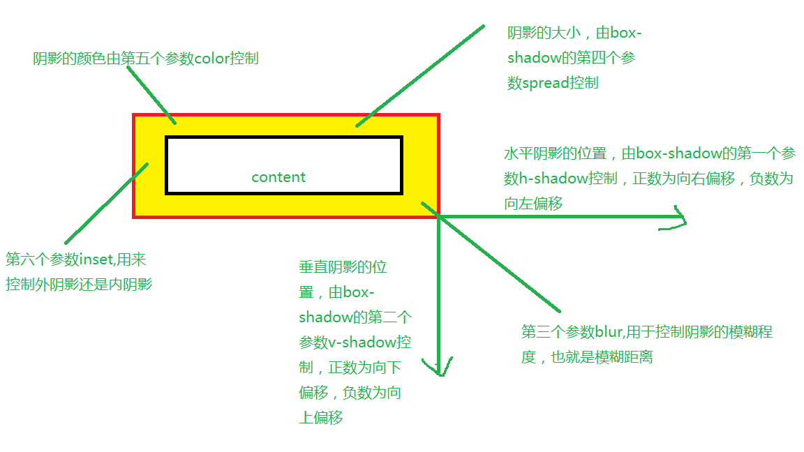

h-shadow: 必需的。水平阴影的位置。允许负值
v-shadow: 必需的。垂直阴影的位置。允许负值
blur :可选。模糊距离
spread :可选。阴影的大小
color :可选。阴影的颜色。在CSS颜色值寻找颜色值的完整列表
inset :可选。从外层的阴影（开始时）改变阴影内侧阴影
box-shadow: h-shadow v-shadow blur spread color inset;
box-shadow: 10px 10px 5px #888888;
box-shadow:0 0 0 1px #fff, 0 0 0 3px #90b4e6;
box-shadow:5px 10px 10px 25px #90b4e6;
box-shadow:0 0 0 5px #fff, 0 0 0 10px #90b4e6;
box-shadow:0 0 0 5px #fff, 0 0 0 10px #90b4e6 inset;